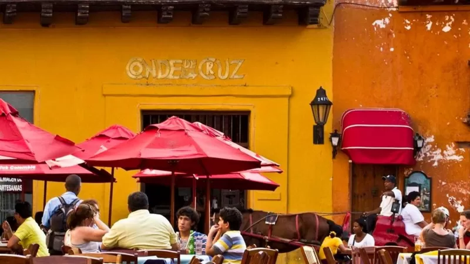
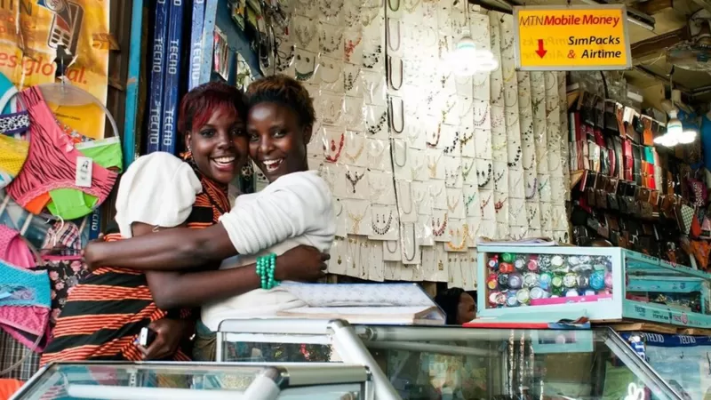
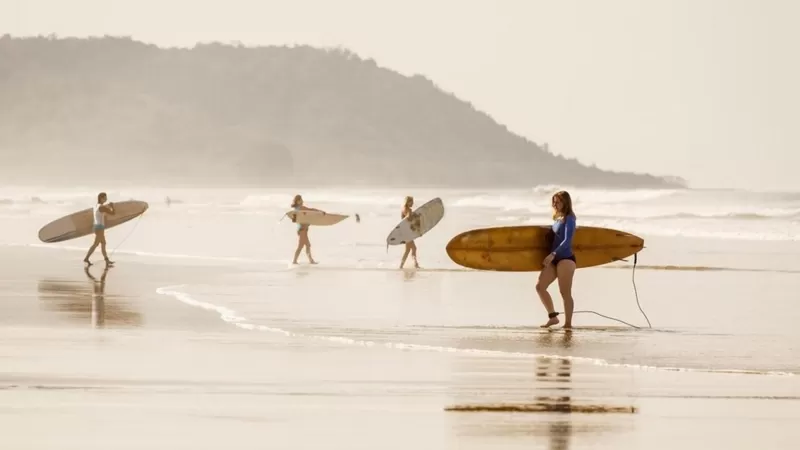
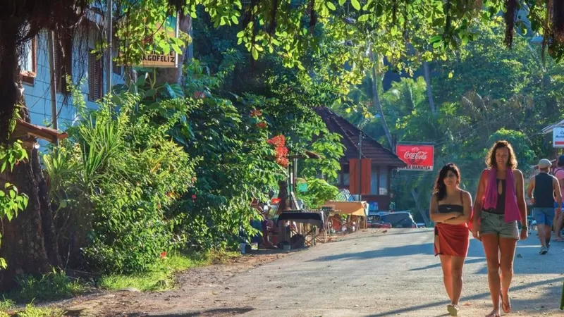
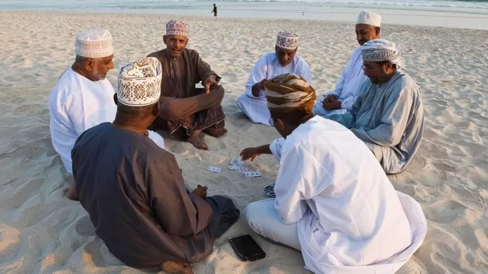
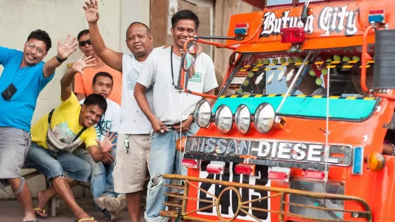

Xaricilərin gözündə ən qonaqpərvər beş ölkə
Xaricdə yaşayan insanlar arasında aparılan sorğuda, qonaqpərvərlik və mehribanlıq baxımından öndə gedən ilk beş ev sahibi ölkə...
Xarici bir ölkədə yaşayan insanların yaratdığı InterNations adlı sosial qurum, hər il sorğu keçirdərək üzvlərindən seçdikləri ölkədə yaşamağın asanlığı, yerli xalqın istiqanlılığı və xeyirxahlığı kimi mövzularda xal verirlər. Bu il də 191 ölkədən 14 min nəfər arasında aparılan sorğu əsasında ən yüksək xal toplayan ölkələr müəyyənləşib. Xalqının mehribanlığı və köməksevərliyi baxımından ilk beşliyə düşən ölkələri təqdim edirik.
Uqanda ilk yeri tutub
Bu şərqi Afrika ölkəsi, mehribançılıq əsasında ən yüksək xalı toplayıb. Uqandada yaşayan heç bir əcnəbi, bu mövzuda aşağı xal verməyib.:
Uqanda, hər bir millətin nümayəndəsini qonaqpərvər qarşılamasına görə tanınır. İlin bütün mövsümlərində yayın hakim olduğu ölkə, həm də gözəl təbiətə malikdir. Hakimiyyətin qeyri-sabitliyi, nəqliyyat, köhnə maşınların istifadəsindən yaranan çirklənmə, infrastruktur kimi problemləri olsa da, burada yaşayan əcnəbilərin çoxu ölkəni çox sevir və daha uzun müddət burada qalmaq üçün müqavilələrini uzatmaq, hətta tamamilə buraya köçmək istəyirlər.
Xaricilər daha çox ingilis dilinin üstünlük təşkil etdiyi və beynəlxalq restoranların olduğu Kampalada yaşayır. Məhəllələr arasında yerli və ya əcnəbi deyə bir ayrıseçkilik də yoxdur. Qida və işçi qüvvəsi ucuz olduğu üçün xaricilər yüksək yaşayış tərzi sürə bilirlər.
Kosta Rika
Ölkənin həyat fəlsəfəsi "doya-doya yaşamaq" deməkdir. Bəziləri burada bərabərlik və şəffaflığın mövcudluğunu sosialist hökumətin adı ilə bağlayır. Ölkədə ingilis dili geniş yayılsa da, ispanca bilmək də yerlilərlə əlaqə qurmaq işini yüngülləşdirir.
Kosta Rika, mədəniyyətini anlayan və tətbiq etməyə çalışanlara qucaq açan bir ölkə kimi bilinir. Burada yaşayan təqaüdçü əcnəbilər sahildə, işləyənlər isə San Jose yaxınlığında yaşamağa üstünlük verirlər. Son 10 ildə ölkədə həyat səviyyəsinin artdığı və qiymətlərin bahalaşdığı müşahidə olunur.
Kolumbiya
- Bir çox xarici Cənubi Amerikadakı bu ölkəni öz ölkəsi kimi mənimsəyib. Ölkədə yaşayan əcnəbilərin sayı az olduğuna görə, yerlilər onlara turist kimi baxır və onların özlərini xoşbəxt hiss etməsinə çalışırlar.
- Ölkənin ikinci böyük şəhəri Medellin-də yaşayan və daha əvvəl 40 ölkə gəzən William Duran, xaricilərə həm tanışlıq, həm də yenilik duyğusunu nizamlı bir şəkildə birgə hiss etdirə bilən daha yaxşı ikinci bir ölkə olmadığını deyir. Kolumbiyalıların nə qədər şən və köməksevər olduğunu izah edir. Ölkədə işləyən əcnəbilərin çoxu, 8 milyon əhalisi olan paytaxt Boqotada yaşayır. Nəqliyyat probleminə görə, iş yeri yaxınlığında ev tutmaq burada çox mühümdür. Kolumbiyada qida və xidmətləri olduqca ucuz əldə etmək mümkündür. Xaricilərin çoxu evində bir neçə xidmətçi saxlaya bilir. Fəqət, onlar, qazancları çox olduğuna görə elektrik və su kimi xidmətlər üçün daha artıq vergi ödəyirlər.
- Oman
- Used to describe the appearance of Web content
- Dünyanın ən günəşli ölkələrindən biri olan Omanın əhalisi, əcnəbilərə qarşı qonaqpərvərliyi ilə tanınır. Bəziləri, ehtiyacı olana kömək etmək, evini əcnəbilər üçün açıb onları yedirdib içirmək ənənəsini İslam inancları ilə əlaqələndirir. Burada evdən kənarda düşərgə qurmaq və macəra idman növləri çox məşhurdur. Bahalılığın artması ilə birgə, son araşdırmalar Omanı Orta Şərqin iqtisadi baxımdan ən uyğun ölkələrindən biri kimi göstərir.

Filippin
Bu adalar ölkəsi, bir çox şirkətin şöbə açdığı və dünyanın hər tərəfindən əcnəbiləri cəlb edən bir yerə çevrilib. Yerli xalq çox qonaqpərvərdir və qonaqlıq və festivallara getməyi, ümumiyyətlə çölə çıxmağı çox sevir.
Turizm nazirliyi "Filippində hər şey daha əyləncəlidir" deyimindən şüar kimi istifadə edir. Əksər xaricilər Manilada işləsələr də, dəniz kənarında yaşamağa üstünlük verirlər. Şəhərin cənubunda yerləşən Tagatay bu baxımdan çox məşhurdur. Filippin 7100 adadan ibarətdir. Əcnəbilər buradakı tropik yaşayış tərzini çox sevirlər.
159 ölkənin vətəndaşları Filippinə vizasız girə bilirlər